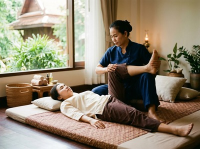
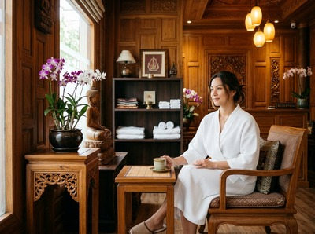

Thai massage in Blythswood is precisely where it belongs: at the heart of Glasgow's most professionally dense district.
Blythswood is Glasgow's Georgian commercial quarter. It's a grid of elegant terraces and listed buildings home to law firms, financial advisers, architects, and major Scottish businesses.
The people who work here carry the weight of long desk hours, sustained focus, and the kind of muscle tension that builds quietly before it becomes a problem.
Serendipity Massage Therapy & Wellness sits on Hope Street, G2, a short walk from Blythswood Square. For anyone working around Blythswood Street, West Regent Street, or Bath Street, the studio is close enough to reach on a lunch break, before work, or on the way home.
There's no long commute and no journey across the city to justify. That proximity makes it genuinely easy to book massage as a regular part of your week.

This matters because working in Blythswood creates specific physical patterns. Concentrated office work, long meetings, and screen-heavy afternoons lead to neck tension, upper back tightness, and posture-related discomfort.
Serendipity's treatments are designed to address these directly — not just to offer brief relief, but to ease the tension that builds across a working week. You can book your session online and fit it around your schedule.
Most people coming to Serendipity from Blythswood have the same complaints. Shoulders that never fully relax. A neck that stiffens by Wednesday. A level of background stress that a good night's sleep doesn't fix.
Traditional Thai massage uses assisted stretching and acupressure along the body's sen energy lines to work directly on these patterns. It improves joint mobility, releases deep muscle tension, and leaves most clients feeling freer than when they arrived.
If you prefer an oil-based treatment, Thai Oil Massage combines flowing strokes with targeted pressure. It eases tension while encouraging deeper relaxation. Both options are available at Serendipity, and the team will help you choose the right one for what you're experiencing.
Serendipity is at Floor 1, Suite 50, Central Chambers, 93 Hope Street, G2 6LD. From Blythswood Square, Hope Street is a five to eight minute walk south through the financial district.
Head down West Regent Street or Bath Street, then turn onto Hope Street heading south. Most Blythswood addresses are within easy walking distance.
By public transport, Cowcaddens subway station is around eight minutes' walk from Blythswood Square and puts you very close to Hope Street. Bus routes 2, 3, 4, 17, and 18 stop on or near Bath Street and Blythswood Street with frequent city centre services. Book in advance to secure your preferred time.

Serendipity is a professional team practice — not a sole trader, not a chain. Every therapist works to a consistent standard using techniques developed by head therapist Jariya Malone.
That consistency means you get the same quality of treatment on your first visit as your tenth. Over time, the team builds a clear picture of your physical needs. Clients from nearby offices return regularly because the results are real and repeatable.
Blythswood grew as Glasgow expanded westward in the late 18th and early 19th centuries. Cotton merchants, chemical manufacturers, and shipping magnates built their homes here in Georgian townhouses and Victorian terraces.
The area became a Conservation Area in 1970 in recognition of its architectural and historic value. Learn more at Blythswood Hill on Wikipedia.
Serendipity is on Hope Street, G2 — a five to eight minute walk from Blythswood Square. Most Blythswood addresses are within easy walking distance. The studio is a realistic option on a lunch break or before and after the working day, with no need to travel across the city.
Walking is the most convenient option. From Blythswood Square, head south on West Regent Street or Bath Street, then turn onto Hope Street. If you prefer public transport, Cowcaddens subway station is around eight minutes' walk from Blythswood Square. Bus routes 2, 3, 4, 17, and 18 also stop on Bath Street and Blythswood Street with regular services.
Same-day appointments are sometimes available depending on the schedule. The best way to check is to book online, where you can see live availability and confirm your slot. For lunchtime sessions especially, booking a day or two ahead is recommended.
Traditional Thai Massage is a strong choice for people doing long hours at a desk. It uses acupressure and assisted stretching to release neck, shoulder, and upper back tension that builds from sustained sitting and poor posture. Thai Oil Massage works just as well for those who prefer a more flowing, relaxation-focused approach. The team can advise on the right option based on what you're experiencing.
Serendipity Massage Therapy & Wellness is open seven days a week. Hours are designed to suit professionals and residents across Glasgow city centre. For up-to-date times and availability, visit serendipitymassage.co.uk or call 0141 673 6630.